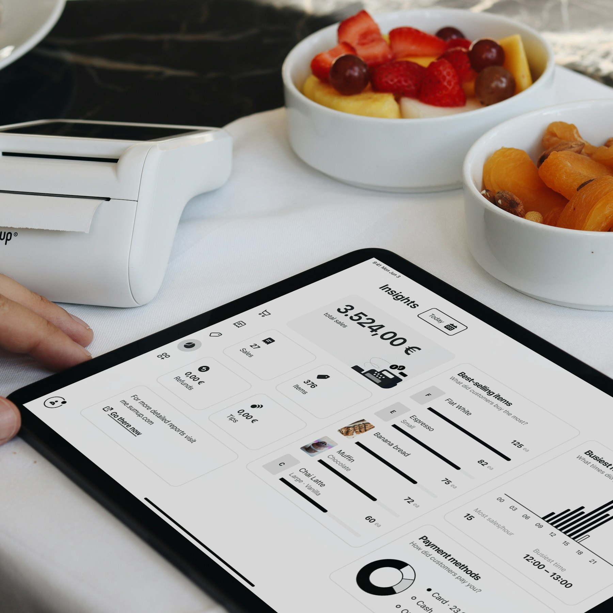
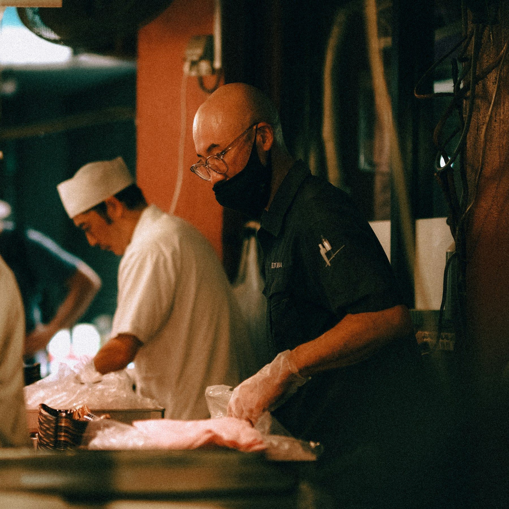

To for mange på jobb mellom 14 og 16
Salget faller 61 % etter lunsj, men bemanningen står stille. Flytt én vakt til fredag kveld.
Planday + PC-Kasse
AI-rådgivning for serveringsbransjen
Klar på 1–2–3. Ingen bindingstid.
Prøv gratis i 30 dagerSalget faller 61 % etter lunsj, men bemanningen står stille. Flytt én vakt til fredag kveld.

Koble til systemene dine på under 15 minutter. Etterpå henter Scope ferske data automatisk hver eneste dag.

AI-agentene våre analyserer dataene og lager konkrete råd — og folk som kjenner bransjen kvalitetssikrer dem.
Du logger inn og får ferske, tydelige råd som hjelper deg å forbedre driften hver dag.
Restauranter, barer, kafeer, nattklubber og kjeder med flere lokasjoner.
Nei. Scope kobles til systemene dere allerede bruker.
Regnskap, kasse, bemanning, booking og levering — blant annet Tripletex, Lightspeed, PC-Kasse, Planday og Quinyx.
Scope analyserer driften og gir korte, konkrete råd. Folk som kjenner bransjen kvalitetssikrer dem før du får dem.
Vi søker testkunder nå, og da prøver du Scope gratis med dine egne tall.
Hver natt, så oversikten er oppdatert når du starter dagen.
Driver du restaurant, kafé eller bar?
Vi er et oppstartsselskap som vil hjelpe en bransje med små marginer — og gi deg verktøyene til å konkurrere på like vilkår med de store kjedene.
Vi svarer gjerne på hvordan Scope passer for akkurat din drift.